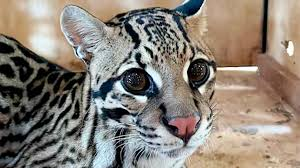

A jaguitira tem as florestas tropicais, savanas e mangues como principal habitat, desse modo, ele pode ser encontrado no Brasil. São felinos de médio porte, pesando até 15 KG, e medindo aproximadamente 50 cm. Em habitat natural, podem viver cerca de 10 anos, já em cativeiro, podem viver até 20 anos.
| Nomenclatura | Tempo de vida | Alimentação | Imagem |
|---|---|---|---|
| Leopardus pardalis | 10 Anos | Coelhos, roedores, repteis |  |